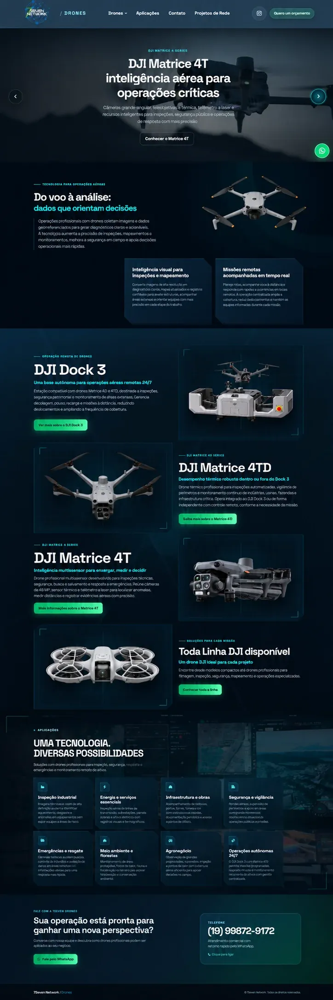
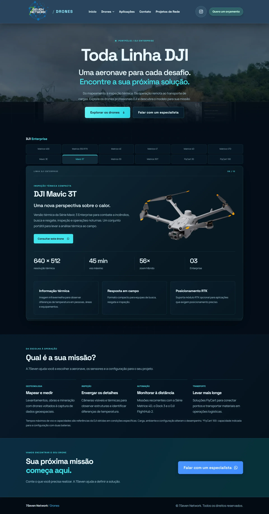
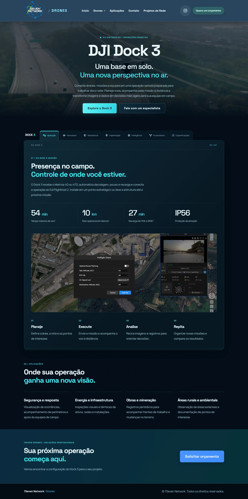
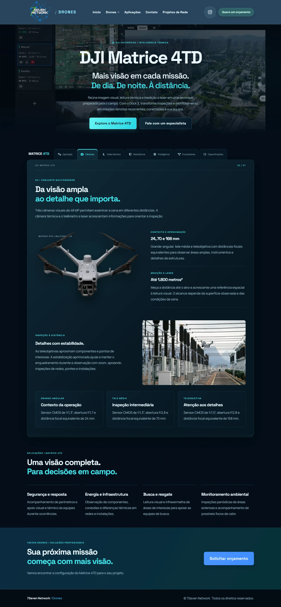
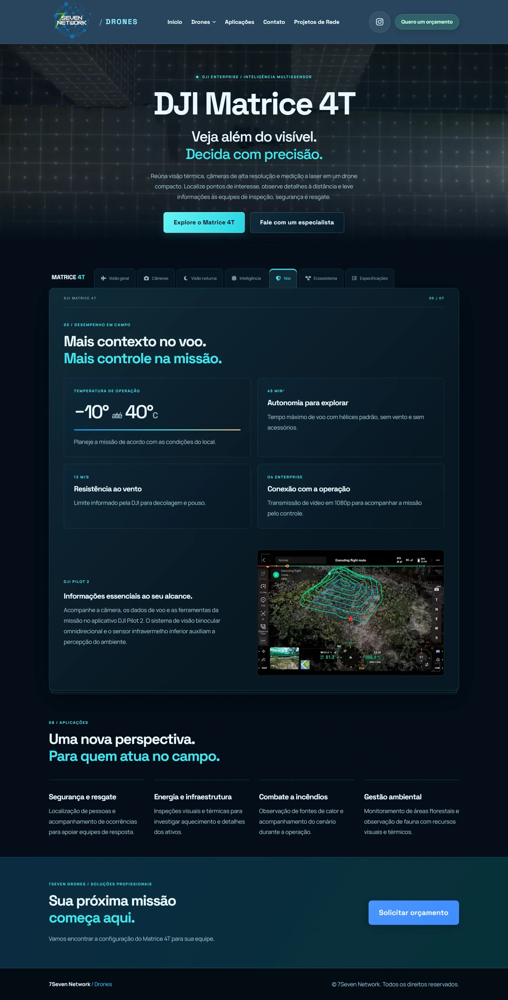

DRONES
7Seven Drones
Sobre o projeto
A pedido do cliente, desenvolvi uma extensão do site institucional da 7Seven Network em um subdomínio dedicado às soluções com drones. O projeto ganhou um espaço próprio para apresentar os produtos e suas aplicações em detalhe, ampliando a presença digital da empresa nesse segmento.
A estrutura foi criada sob medida para organizar as linhas e os equipamentos em páginas dedicadas, com uma sequência de informações que facilita a exploração de cada solução. A apresentação combina conteúdo e recursos visuais para ajudar o visitante a conhecer os produtos, entender suas possibilidades de uso e identificar as opções mais alinhadas às suas necessidades.
Identidade e movimento
Criei uma identidade visual própria para essa experiência, com design moderno, clean e tecnológico. A composição valoriza as imagens dos equipamentos e organiza os conteúdos com uma hierarquia clara, dando espaço aos detalhes de cada produto sem tornar a leitura cansativa.
Os vídeos ao longo das páginas mostram as soluções em ação, aproximando o visitante das aplicações dos drones. Animações envolventes e efeitos de hover expressivos complementam essa apresentação, dando ritmo à exploração e valorizando o visual dos equipamentos. A integração desses recursos foi pensada com atenção ao carregamento, equilibrando impacto visual e leveza para tornar a navegação fluida e envolvente.
Exploração acessível
Em um projeto que valoriza imagens, vídeos e interatividade, também priorizo a acessibilidade no acesso às informações dos equipamentos. Esse olhar inclui a navegação pela tecla Tab entre os elementos interativos, para apoiar a exploração das linhas de drones e de suas aplicações pelo teclado.
Explore o projeto




